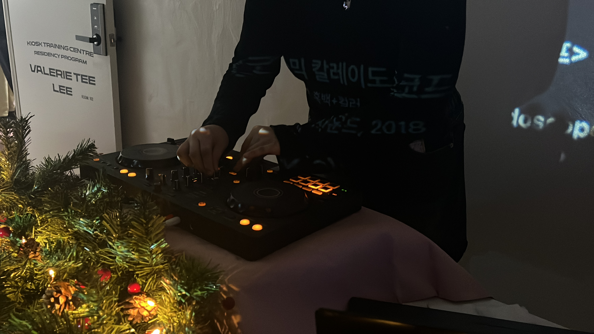
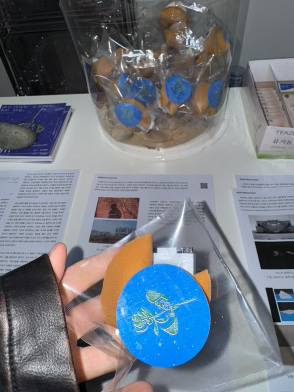
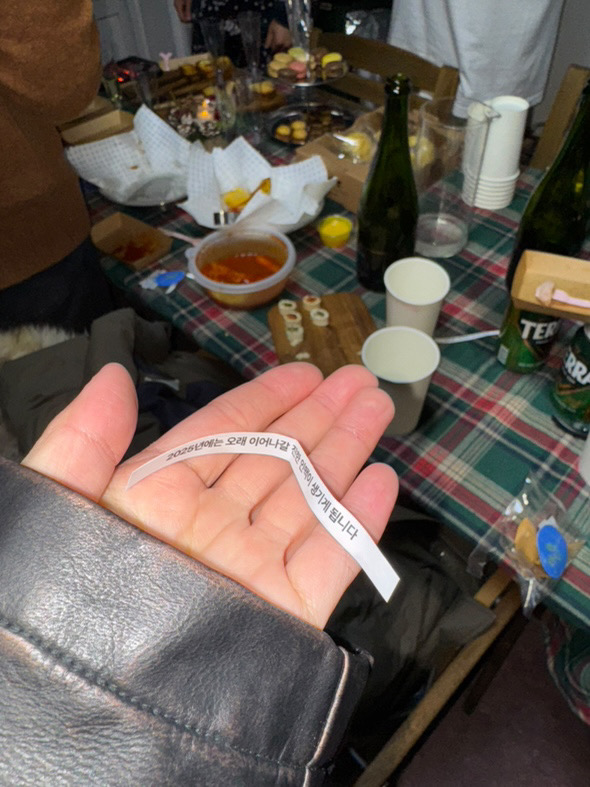
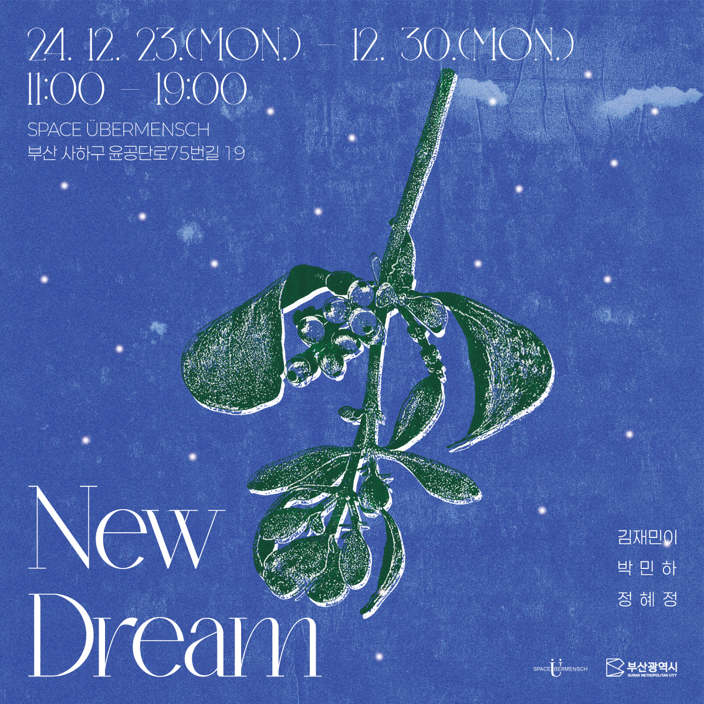
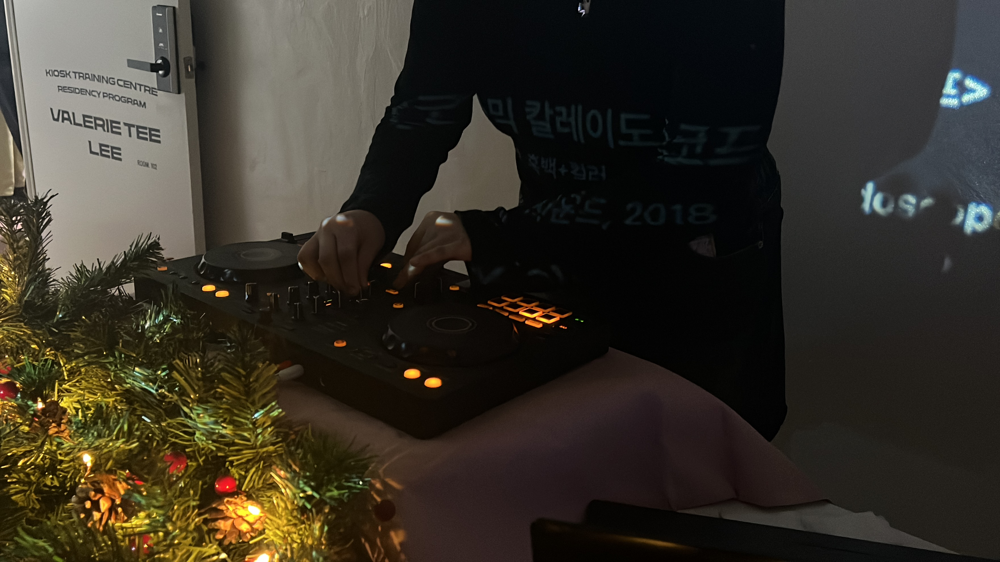
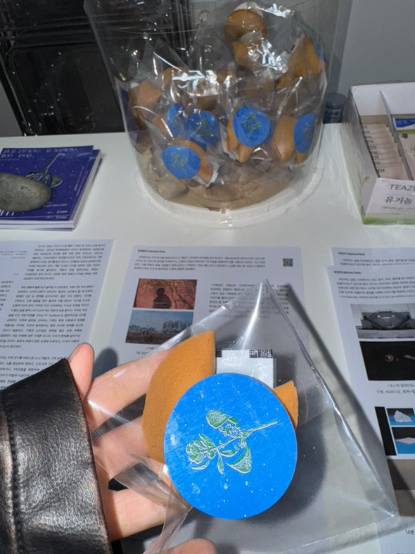
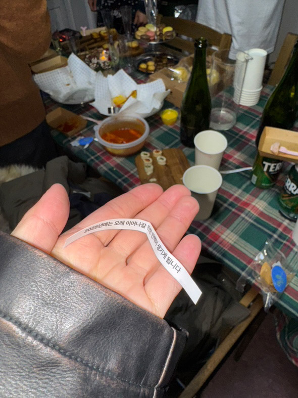
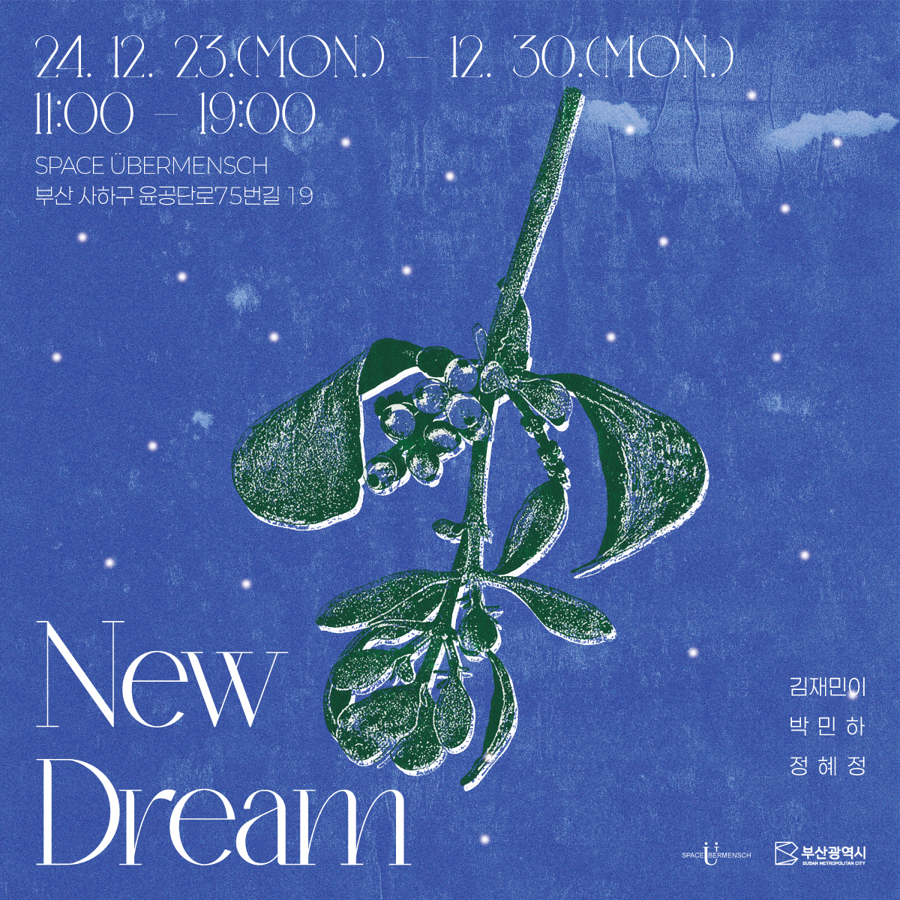

뉴드림
장소: 스페이스 위버멘쉬
작가: 김재민이, 박민하, 정혜정
주최/주관: 오윤영
기획: 오윤영
후원: 부산문화재단 우수예술지원
클로징 파티: DJ 탕탕맨
《뉴드림》은 ‘다대 뉴드림 플랜’을 추진 중인 부산광역시 다대동에서 12월 23일부터 30일까지 진행되며 김재민이, 박민하, 정혜정 작가가 참여한다. 전시 배경은 가상 인물 A의 휴식 공간이다. 그는 이전 시대 예술가의 영상 작품을 감상하고, 겨우살이 아래에서 소원이 이루어진다는 희망과 함께 종이에 소원을 적으며 입을 맞춘다. 방문자는 A의 시점에서 공간을 둘러볼 수 있다. 크리스마스라는 일시적이고 반복적인 행사와 더불어 2025년을 앞둔 현시점에서 앞으로 다가올 미래와 공동체적 가치를 모색하고자 한다.
전시는 크리스마스를 지나 한 해가 끝나는 시점까지 진행한다. 지역 연구, 탈중심화, 욕망 등과 관련된 작가들의 비디오 작업을 감상할 수 있게 기획하였다. 전시장에는 각 작가의 영상이 담긴 TV 3대를 공중에 띄워 디지털 이미지의 비물질성을 드러내고자 했다. 공간에 일렁이는 LED 양초의 빛은 열도 연소도 없으며 그 순간의 염원만 드러낸다. 기존 레지던시 공간은 전시 기간 동안 상영장 및 공연장으로 사용되어 일시적인 공적 장소로 기능한다. 공연은 29일 진행하며 테트리스 등 과거 게임 배경음을 활용한다.
전시의 기반인 ‘다대 뉴 드림 플랜’ 사업은 동·서부산 균형 발전이 목적이다. 2011년 한진중공업이 떠나고 방치되었던 유휴공간을 포함 55만m²의 부지를 해양 복합 문화 지역으로 꾸린다는 내용이다. 가덕신공항과 에코델타시티의 연계 거점지역으로 개발 잠재성이 크다는 평가를 받고 있으나, 난개발과 공공성 담보에 대한 우려의 목소리도 있다. 개발 소식은 다가올 변화에 대한 걱정과 기대를 동시에 불러온다. 개발과 균형 발전이라는 목표는 다대포만의 것이 아니다. 이러한 맥락 속에서 다가올 미래는 어떤 모습일지 이야기하고자 한다.
행성의 시간에서 인류가 땅에 발을 디딘 것은 짧은 순간이었지만 많은 것이 변했다. 지구를 구획하고, 인공 물질을 쌓아 올리며 이를 종이나 디지털 숫자로 교환하기까지 한다. 하지만 인간 각자에게는 자신과 주변을 지키고 더 좋은 삶을 향해 나아가고자 하는 욕망이 있을 뿐이다. 우리는 무슨 꿈을 꾸고, 어떤 미래를 그리는가? ‘뉴(New)’는 필연적으로 시간을 내포한다. 이전과 달라질 것이라는 기대는 현재 시점에서 미래를 떠올리는 것이며, 이전과 달라졌다는 말은 과거와 현재를 비교한 것이기 때문이다. 기획전 뉴드림은 희망을 품은 상태 자체에 집중해본다.
김재민이는 지역 연구를 바탕으로 도시 개발과 그에 얽힌 현상들을 탐구해 왔다. 서울 중심부와 변두리 지역, 신도시와 구도심 속 이야기와 흔적을 추적하거나, 근현대 산업과 대조적인 1차산업을 체험하며 이를 기록으로 남긴다. 그는 인천 송도, 서울 영등포 등을 사람들과 함께 달리고 산책한다. 벼농사를 짓거나 염전에서 소금을 캐는 등 지도나 드론에서 포착되지 않는 미시적 움직임과 신체적 경험에 집중했다. <거북섬의 비밀>(7분 30초, 1채널 비디오, 2022)은 시각연구모임 히스테리안의 공공예술 프로젝트 《욕망이 빠져나간 자리: 출몰지》 일환이다. 경기도 시흥시 인공 거북섬에 담긴 염원과 집에 대한 욕망을 중심으로 이야기를 풀어나간다. 거북섬은 스페인 코스타 델 솔을 모티브로, 한국의 팜 주메이라를 꿈꾸며 2024년 현재도 개발 중인 곳이다. 작가는 탐사팀과 함께 이곳을 조사하고, 땅에 아복 열매의 씨앗을 심었다. 부산 송도 거북섬의 인위적으로 만들어진 전설과 함께, 지역 개발의 원대한 꿈을 허구적 서사로 풀어낸다. <만나기만 만날진대 너도성공 나도성공>(7분 01초, 1채널 비디오, 2024)에서 작가는 충청북도 청주 지웰시티 일대와 석남천을 달린다. 지금은 흔적도 없이 사라진 청주 구 대농 방직공장이 있던 지역으로, 현재 대농로라는 이름만 남아 있다. 이제 규격화된 쇼핑몰과 대규모 아파트 단지는 거대 공장단지를 대신하여 산업화를 주도한다. 작가는 1932년 조선직물에서 시작한 대농 방직의 변화를 추적하며, 부평 산곡동, 영등포 문래자이 등 과거 방직공장이 있던 지역의 이미지와 병치한다.
박민하는 실험 다큐멘터리, 영상 설치, 공연, 출판물 등 다양한 매체로 미디어가 어떻게 시공간적 환영을 만들어내는지 탐구해 왔다. 작가는 이미지에 내재한 체계와 관념을 해부하고 디코드하여 가시화한다. 2010년 국경선에 대한 탐구에서 시작해 2013년에는 환상과 실재가 뒤섞여 범람하는 이민자들의 도시 LA에 대해 다뤘다. 이후 우주와 비물리적 세계를 다루며 이야기를 확장해 나간다. <코스믹 칼레이도스코프>는 광원과 빛, 불, 이미지를 향한 인류의 매혹에 관한 실험 다큐멘터리이다. 박민하는 아폴로 우주선과 관련된 사건들을 아즈텍 신화와 달토끼 신화로 재조명했다. 미지의 세계를 향한 인류의 끝없는 갈망은 우주로 이어졌고, 냉전 시기 미국과 소비에트를 중심으로 한 치열한 우주 경쟁이 발발했다. 그중에서도 유인 우주선 아폴로 11호의 달 착륙은 20세기 서구 사회의 기념비적 사건이다. 작가는 미국 플로리다 케네디 우주센터를 중심으로 이야기를 전개한다. 폐허가 된 사원을 연상케 하는 발사대는 1967년 아폴로 1호 모의실험 중 화재 사고로 우주비행사 3인이 사망한 곳이다. 센터 내 유물처럼 전시된 운석들은 손에 닿지 않을 때 더욱 빛나고 아름답다. 멀리 빛나는 별들은 만화경 이미지처럼 분화하며 환상의 세계를 비춘다. <잡을 수 없는 눈 이야기>는 쉽게 녹아 사라지는 눈을 중심으로 이야기를 풀어간다. 작가는 크리스마스를 앞둔 LA에서 서울에서 본 눈을 떠올리고 이를 찾아 나선다. 불가능해 보이는 이 여정은 60년대 초 할리우드 영화 특수 효과 기계들에서 시작한다. 기계 공장 카탈로그는 이렇게 말한다. “우리 사업은 마치 연금술 같은거예요. 일시적이고, 갖기 어려운 것들을 영원히 갖게 해주는거죠.” 길 위에 재현된 눈은 사람들에게 향수를 선물하거나, 새로운 추억을 만들어낸다. 그러나 동시에 눈 아닌 눈은 바닥에 녹아들지도, 컵에 담기지도 못한 채 미끄러져 내린다.
정혜정은 드로잉, 영상, 설치, 글쓰기 등 다양한 매체로 기존 서사와 체계를 해체하고 재맥락화한다. 또한 다양한 정체성 간 경계를 허물고자 자연, 미디어, 유기물과 무기물 간 상호작용에 주목해 왔다. 작가는 신체가 감각한 공간을 재해석하거나, 물과 관련하여 경계를 해체하는 작업을 이어왔다. 19살에 시작한 스킨스쿠버 다이빙은 물에 대한 상상과 미시 세계로의 관찰로 이어졌다. 2009년 상상 속 바다 풍경을 드로잉하고 영상으로 제작한 것을 시작으로 2014년부터 2020년까지 전시, 영상, 퍼포먼스, 웹페이지 등 다양한 매체를 활용해 한강을 재해석하는 프로젝트를 진행하기도 했다. 최근에는 이러한 관심을 확장하여 바다 생물인 따개비, 멍게 등의 관점에서 기존 관념 해체를 시도하거나, 신체를 여러 감각으로 경험할 수 있도록 영상, 인터렉티브 아트 등을 활용한 작업을 진행했다. <액체몸체>는 인간 중심적 사고를 넘어 동식물, 무생물, 자연, 기술 등 비인간 존재들과 관계 맺기를 시도한다. 정혜정은 디지털 가상공간을 활용해 단일한 육체에서 벗어난 다종다양한 신체 경험을 탐구했다. 작품은 멸종된 여행비둘기 마사, 반려동물 강아지 또리, 바다 생명체 등 다양한 시점을 넘나들며 이야기를 전개한다. 땅 위에 단단히 새겨진 질서와 달리, 유동적인 바다와 가상 공간은 경계를 허물고 새로운 가능성을 탐색할 수 있게 한다. 작가는 신체가 가진 물질적 한계를 넘어, 모든 존재의 시간을 횡단하며 경계 탈피와 확장 가능성을 모색했다. <반의 반의 반 세계>는 눈에 보이지 않는 작은 객체들의 세계를 드로잉, 3D 모델링 애니메이션으로 가시화한 작품이다. 스티로폼 입자, 미세플라스틱, 미세먼지, 바이러스 등은 쉽게 지각되지 않음에도 큰 영향을 끼친다. 이 객체들은 인간과 비인간, 세계 사이의 관계를 재구성해야 한다는 과제를 던졌다. 작가는 작은 것들의 세계와 이들이 머무르고 이동하는 순간의 ‘상태’를 이야기한다. 영상은 세계 곳곳에서 찍은 영상과 이를 재해석한 드로잉, 3D 모델링 애니메이션 등으로 구성되어 있다. 화면 속 요소들은 느슨히 연결되고 충돌하기도 하며 기존과는 다른 시점에서 바라보기를 제안한다.